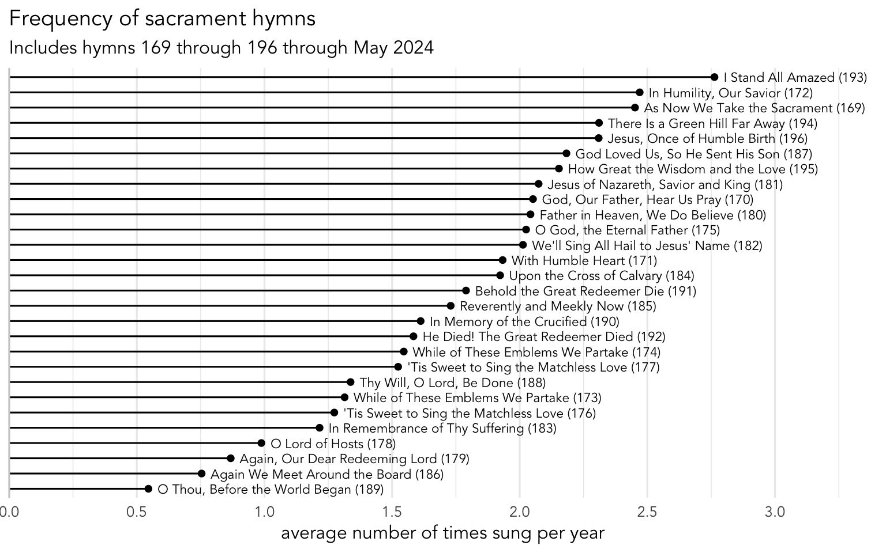
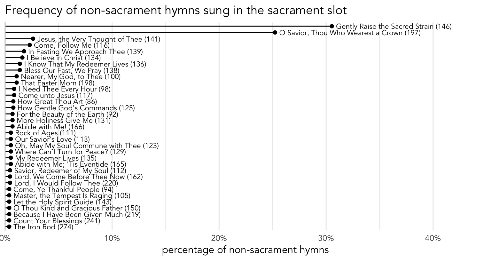
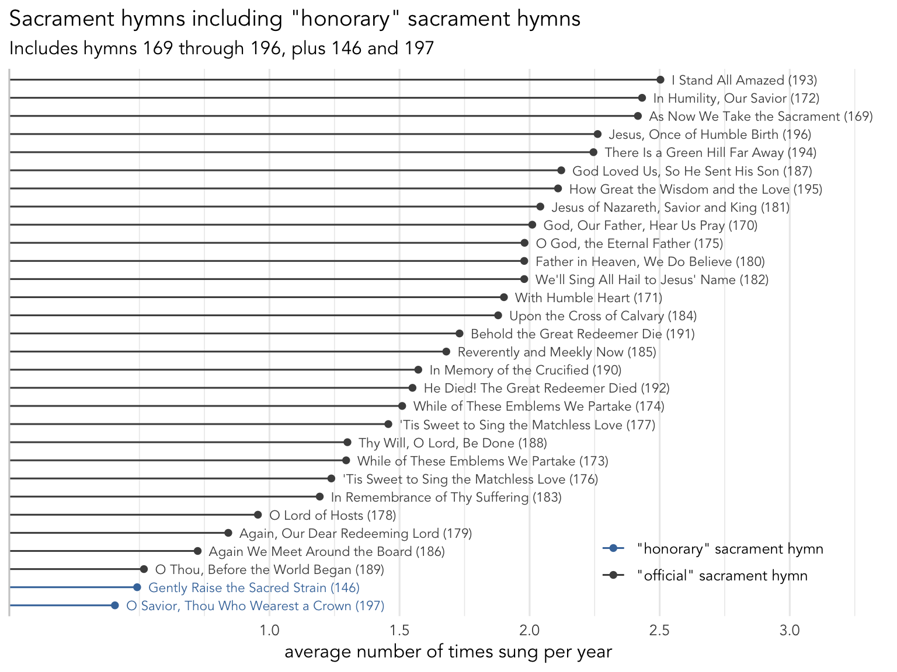

What are the most and least common Sacrament Hymns?
sacrament
frequency
One of the trickiest things to work with when examining how popular the hymns are is the sacrament hymns. While opening, sacrament, and closing hymns are all sung by congregations,1 the sacrament hymn itself is different because only a relatively small set of hymns are allowed. This means that those hymns will be among the most commonly sung hymns because there are fewer hymns to pick from but just as many chances to sing them, compared to other hymns. So, in this post, I dive into sacrament hymns.
1 See §19.3.2), although I swear the Handbook used to say that the opening hymn could be sung by the ward choir, but I’m not 100% sure on that.
In Section 1, I first define what I mean by a “Sacrament hymn.” Then in Section 2 show how common each sacrament hymn is when it’s sung in the sacrament slot in the meeting. Staying on the theme of the sacrament slot, Section 3 then looks at other hymns that are sung as if they were a sacrament hymn. Section 4 then returns to the canonical list and looks at when else they were sung. Finally, Section 5 is a new addition that looks at the sacrament hymns released since 2024 to see how they compare.
1 What counts as a sacrament hymn?
We’ll start off by looking at hymns in the sacrament slot, or rather, the hymn sung immediately before the sacrament is blessed and passed to the congregation. As far as I can tell, §19.3.2 of the General Handbook has the only instruction about sacrament hymns, and it says that “[t]he sacrament hymn should refer to the sacrament itself or to the sacrifice of the Savior.” This instruction is repeated on page 380 of the 1985 hymnal.
According to the Table of Contents, sacrament hymns go from 169 (
2 In fact, I’ve had church leaders enforce this constraint. I was in a ward where a newly-called music coordinator chose reverent hymns that were outside of that range. After about two weeks, the bishop announced that we’d be singing a different hymn than what was listed on the program and he changed it to a sacrament hymn. Presumably he later explained the policy to the chorister afterwards because we sang “true” sacrament hymns from then on.
2 Frequency
So let’s take a closer look at those 28 sacrament hymns. In theory, if a ward were to systematically cycle through them, they’d make it through all of them in a little over six months. However, Figure 1 shows that they’re definitely not all sung equally as often as each other.
Many plots throughout this website are formatted just like this one here. Hymns that are less common are in the lower left and hymns that are more common are in the upper right. The numbers along the bottom refer to how many times, on average, a ward will sing that hymn within a given year.
TipClick to show the summarized data
| Rank | Title | Number | Average per year | Every X years | Every X months | Every X weeks |
|---|---|---|---|---|---|---|
| 1 | I Stand All Amazed | 193 | 2.763 | 0.362 | 4.343 | 17.374 |
| 2 | In Humility, Our Savior | 172 | 2.470 | 0.405 | 4.859 | 19.434 |
| 3 | As Now We Take the Sacrament | 169 | 2.451 | 0.408 | 4.895 | 19.580 |
| 4 | There Is a Green Hill Far Away | 194 | 2.311 | 0.433 | 5.194 | 20.775 |
| 5 | Jesus, Once of Humble Birth | 196 | 2.309 | 0.433 | 5.196 | 20.786 |
| 6 | God Loved Us, So He Sent His Son | 187 | 2.183 | 0.458 | 5.497 | 21.988 |
| 7 | How Great the Wisdom and the Love | 195 | 2.154 | 0.464 | 5.572 | 22.288 |
| 8 | Jesus of Nazareth, Savior and King | 181 | 2.074 | 0.482 | 5.786 | 23.144 |
| 9 | God, Our Father, Hear Us Pray | 170 | 2.052 | 0.487 | 5.848 | 23.393 |
| 10 | Father in Heaven, We Do Believe | 180 | 2.042 | 0.490 | 5.876 | 23.505 |
| 11 | O God, the Eternal Father | 175 | 2.025 | 0.494 | 5.926 | 23.705 |
| 12 | We'll Sing All Hail to Jesus' Name | 182 | 2.013 | 0.497 | 5.962 | 23.849 |
| 13 | With Humble Heart | 171 | 1.933 | 0.517 | 6.208 | 24.832 |
| 14 | Upon the Cross of Calvary | 184 | 1.923 | 0.520 | 6.240 | 24.959 |
| 15 | Behold the Great Redeemer Die | 191 | 1.790 | 0.559 | 6.705 | 26.822 |
| 16 | Reverently and Meekly Now | 185 | 1.730 | 0.578 | 6.938 | 27.753 |
| 17 | In Memory of the Crucified | 190 | 1.612 | 0.620 | 7.445 | 29.779 |
| 18 | He Died! The Great Redeemer Died | 192 | 1.584 | 0.631 | 7.577 | 30.310 |
| 19 | While of These Emblems We Partake | 174 | 1.546 | 0.647 | 7.764 | 31.055 |
| 20 | 'Tis Sweet to Sing the Matchless Love | 177 | 1.524 | 0.656 | 7.876 | 31.504 |
| 21 | Thy Will, O Lord, Be Done | 188 | 1.337 | 0.748 | 8.973 | 35.894 |
| 22 | While of These Emblems We Partake | 173 | 1.314 | 0.761 | 9.132 | 36.530 |
| 23 | 'Tis Sweet to Sing the Matchless Love | 176 | 1.274 | 0.785 | 9.423 | 37.690 |
| 24 | In Remembrance of Thy Suffering | 183 | 1.216 | 0.822 | 9.869 | 39.476 |
| 25 | O Lord of Hosts | 178 | 0.988 | 1.012 | 12.146 | 48.586 |
| 26 | Again, Our Dear Redeeming Lord | 179 | 0.868 | 1.152 | 13.828 | 55.311 |
| 27 | Again We Meet Around the Board | 186 | 0.754 | 1.327 | 15.919 | 63.675 |
| 28 | O Thou, Before the World Began | 189 | 0.545 | 1.833 | 22.000 | 88.000 |
Frequency of sacrament hymns
As I’ve written already,
Most sacrament hymns are sung at least once a year per ward, on average, but there were some that were less common.
It’s likely that the difference between the most frequent and the least frequent hymns is exaggerated if you ignore wards that systematically cycle through the sacrament hymns. In such wards
3 Non-sacrament hymns
Once in a while, a ward will indeed sing some other hymn in the sacrament slot. Many hymns were selected by at least one ward at least one time. Besides the 28 hymns in the 169–196 range, I have attestations of 165 other hymns being sung at least once in the 94,868 sacrament meetings in my database. The most common of these hymns is plotted in Figure 2. As you can see, two stood out. They are

There is good reason for why

Let’s start with
The oddball though is
TipRecommendation for the next hymnal
Consider putting
As for the other hymns that are sung in the sacrament slot, there’s nothing more to say other than occasionally you’ll see some other Christ-focused hymn (like
4 Sacrament hymns sung elsewhere
Finally, we can look at sacrament hymns that were sung at some other point in a sacrament meeting. Table 1 shows the sacrament hymns in order of how often they’re sung elsewhere during the meeting.
| When during the meeting are each of the sacrament hymns sung? | ||||
| In order of how often they're sung not as sacrament hymns | ||||
| hymn | Opening | Sacrament | Intermediate | Closing |
|---|---|---|---|---|
| I Stand All Amazed (193) | 2.44% | 91.49% | 2.08% | 3.98% |
| 'Tis Sweet to Sing the Matchless Love (177) | 1.16% | 97.35% | 0.74% | 0.74% |
| Again We Meet Around the Board (186) | 0.67% | 97.99% | 0.50% | 0.84% |
| Behold the Great Redeemer Die (191) | 0.56% | 98.17% | 0.70% | 0.56% |
| Thy Will, O Lord, Be Done (188) | 0.37% | 98.41% | 0.56% | 0.66% |
| Father in Heaven, We Do Believe (180) | 0.68% | 98.46% | 0.18% | 0.68% |
| O Thou, Before the World Began (189) | 0.24% | 98.58% | 0.47% | 0.71% |
| There Is a Green Hill Far Away (194) | 0.33% | 98.59% | 0.33% | 0.76% |
| God Loved Us, So He Sent His Son (187) | 0.23% | 98.62% | 0.46% | 0.69% |
| Reverently and Meekly Now (185) | 0.36% | 98.76% | 0.36% | 0.51% |
| 'Tis Sweet to Sing the Matchless Love (176) | 0.40% | 98.81% | 0.30% | 0.49% |
| Jesus, Once of Humble Birth (196) | 0.43% | 98.86% | 0.38% | 0.32% |
| He Died! The Great Redeemer Died (192) | 0.39% | 98.89% | 0.32% | 0.39% |
| God, Our Father, Hear Us Pray (170) | 0.49% | 98.96% | 0.18% | 0.37% |
| How Great the Wisdom and the Love (195) | 0.29% | 99.07% | 0.17% | 0.47% |
| O Lord of Hosts (178) | 0.39% | 99.10% | 0.26% | 0.26% |
| Upon the Cross of Calvary (184) | 0.26% | 99.22% | 0.26% | 0.26% |
| In Remembrance of Thy Suffering (183) | 0.21% | 99.28% | 0.21% | 0.31% |
| While of These Emblems We Partake (174) | 0.24% | 99.35% | 0.16% | 0.24% |
| Again, Our Dear Redeeming Lord (179) | 0.00% | 99.42% | 0.29% | 0.29% |
| In Memory of the Crucified (190) | 0.00% | 99.45% | 0.23% | 0.31% |
| O God, the Eternal Father (175) | 0.19% | 99.50% | 0.19% | 0.12% |
| While of These Emblems We Partake (173) | 0.00% | 99.52% | 0.19% | 0.29% |
| As Now We Take the Sacrament (169) | 0.00% | 99.54% | 0.05% | 0.41% |
| With Humble Heart (171) | 0.13% | 99.55% | 0.19% | 0.13% |
| We'll Sing All Hail to Jesus' Name (182) | 0.12% | 99.56% | 0.19% | 0.12% |
| In Humility, Our Savior (172) | 0.00% | 99.59% | 0.15% | 0.25% |
| Jesus of Nazareth, Savior and King (181) | 0.00% | 99.70% | 0.18% | 0.12% |
| Based on 40,795 sacrament meetings through May 2024 | ||||
Unsurprisingly,
Overall, while singing a specific sacrament hymn elsewhere in the meeting is pretty unusual, the odds of singing any of the sacrament hymns is more common since their frequencies add together. It happened in 529 of the 40,795 sacrament meetings I have data from, or 1.3% of them. That means, on average, a ward might since hymn 169–196 at some other point in the meeting approximately once every 1.61 years.
5 New hymns
Since this analysis was first posted in September 2023, we’ve been blessed with the addition of many new hymns. At the time of writing (March 2026), we’ve seen 72 new hymns, about 9 of which have been tagged as sacrament hymns.3 Here they are:
3 When looking through the hymns, I’m seeing which ones are tagged with “the Sacrament”. (I’m not sure why it’s the sacrament and not just sacrament like all other tags.) I’m getting conflicting results when I search on the website, the Library app, and the now-defunct music app, so I’ll just put all of them here.
- It Is Well with My Soul (#1003)
- As Bread is Broken (#1007)
- Bread of Life, Living Water (#1008)
- Gethsemane (#1009)
- Behold the Wounds in Jesus’ Hands (#1016)
- This Is the Christ (#1017)
- O Lord, Who Gave Thy Life for Me (#1041)
- Help Us Remember (#1043)
- Joyfully Bound (#1052)
- Were You There? (#1206)
@tab-new shows how commonly sung each of these hymns are as opening, sacrament, intermediate, and closing hymns. You’ll have to take some of these numbers with a grain of salt, particularly
Recall that even
The other hymns are used a fair amount in other times during the meeting. They include
I suspect that the reason why most of these are not as commonly sung during the sacrament slot is simply because of their location among the new hymns. It’s easy to remember which are sacrament hymns in the 1986 hymnal because they’re arranged all next to each other and in the middle of the printed book. These ones are scattered throughout the new hymns. I suspect that the sacrament hymns in the new printed hymnal will also be placed next to each other, and I predict that these will be more often sung during the sacrament slot and less often in other slots in the meeting. Come back in a few years and maybe I’ll do a follow-up analysis!
6 Conclusion
The findings in this post suggest that were have a strong tradition of singing hymns 169 through 196 in our sacrament meetings immediately before the sacrament itself. Some wards systematically cycle through them, which I believe is a perfectly appropriate thing to do to include the widest variety of hymns to the ward. Other wards pick and choose, which inevitably leads to some favorites being sung more and some lesser-known ones falling through the cracks. And the variation in the new hymns suggests that we rely on this grouping of page numbers when determining which hymns to sing.
As I’ve shown in analyses focused on specific holidays, wards do not always stick to the table of contents at the beginning of the hymnal when choosing appropriate hymns. However, in the case of the sacrament—which is the most important part of our Sunday worship and the primary reason for Sunday gatherings—it’s clear that we adhere strongly to the recommendation. Nevertheless, the addition of